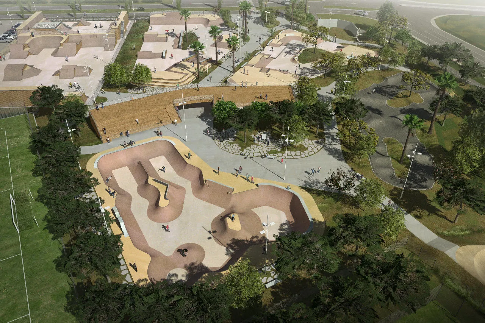
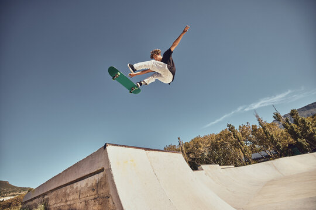

Le nouveau skatepark géant constituera un équipement sportif de premier plan pour la ville. Conçu avec des infrastructures modernes et variées, il permettra aux pratiquants de skateboard, de BMX, de roller et de trottinette de s’entraîner dans les meilleures conditions. Grâce à ses différentes zones adaptées à tous les niveaux, il favorisera la découverte de ces disciplines tout en accompagnant la progression des sportifs les plus expérimentés.

Au-delà de sa vocation sportive, le skatepark deviendra un véritable espace de rencontre et de partage pour les habitants. Il offrira un cadre dynamique où les jeunes pourront se retrouver, échanger et développer un esprit de communauté. Des compétitions, démonstrations et événements culturels pourront y être organisés régulièrement, contribuant ainsi à l’animation de la ville et à son attractivité auprès des visiteurs.